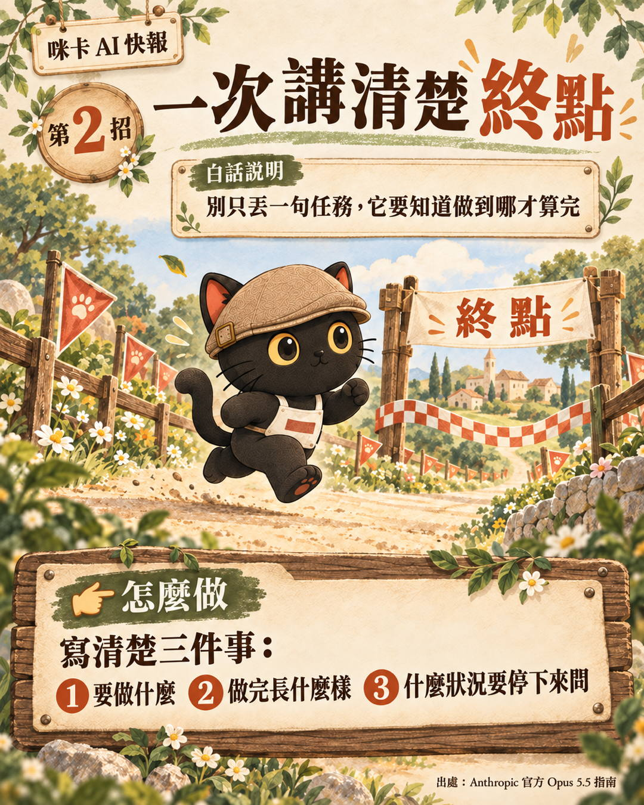
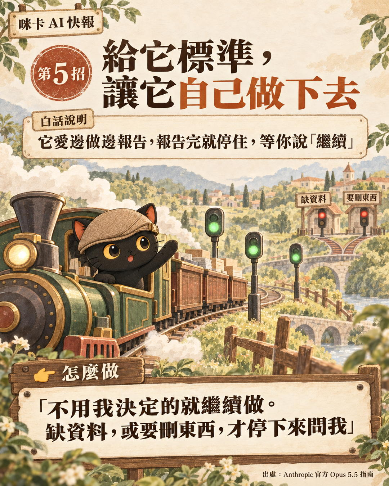
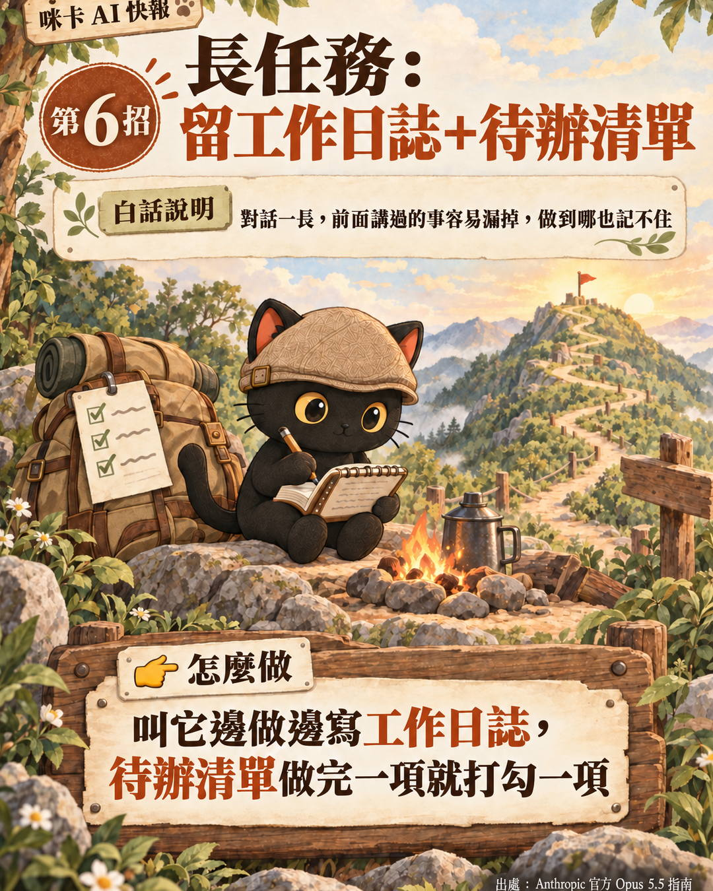
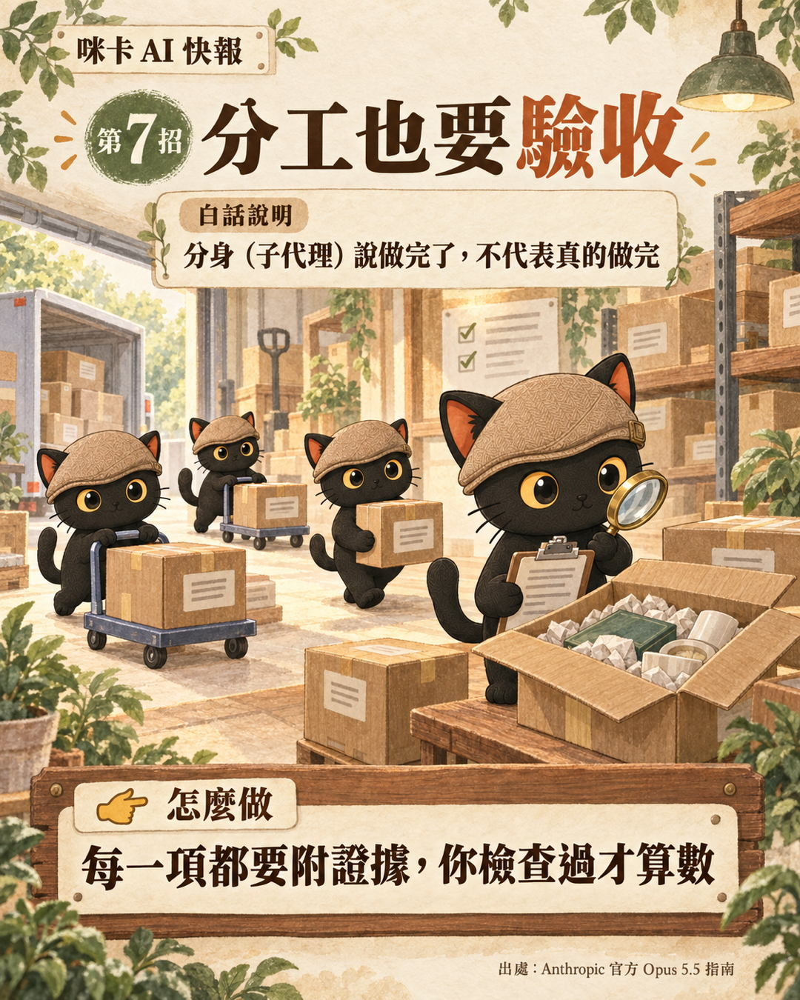
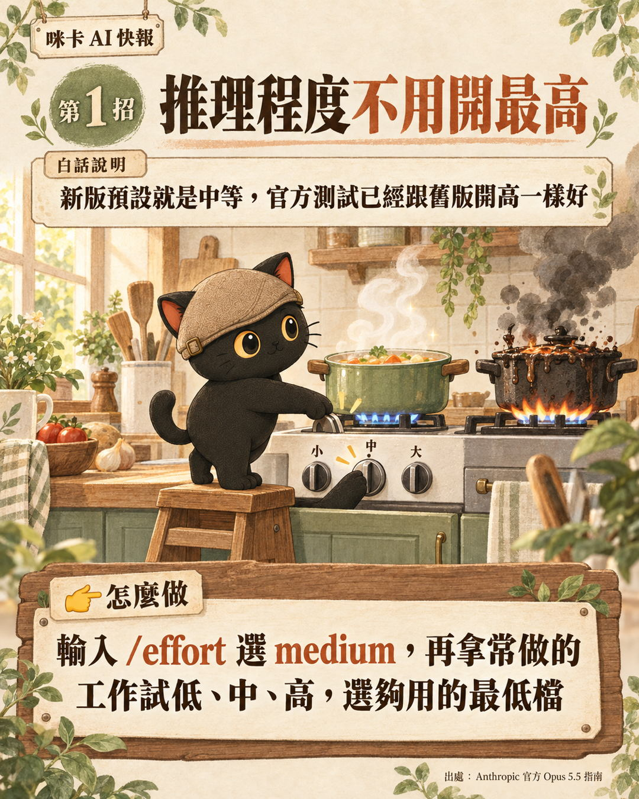
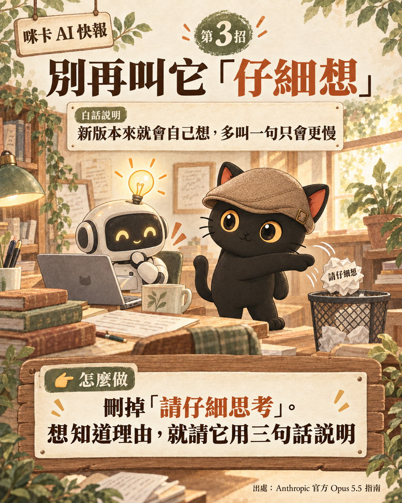
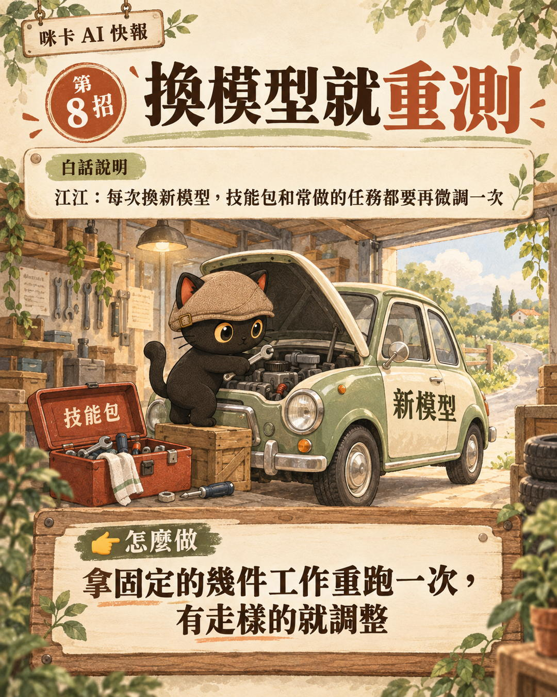

這篇在講什麼
Anthropic 替新模型 Claude Opus 5.5 出了一份官方的下指令指南。內容看起來是寫給工程師的，有參數、有 API，但拆開來看，很多段落講的其實是同一件事：怎麼把工作交代清楚，讓 AI 自己做下去。這篇挑出 7 招，用白話講一遍，每一招附上我自己的工作怎麼用、可以直接複製的指令，最後補一招我自己的：換新模型，就把常做的工作重測一次。
- 不寫程式，但每天用 AI 寫稿、整理資料、做簡報的知識工作者
- 聽說 AI 又出新版，想知道自己下指令的習慣要不要跟著改的人
- 要帶同事或客戶用 AI，想有一套說得清楚的交代方法的人
- 官方指南裡，不寫程式也用得到的 7 招，每招一句白話
- 四段可以直接複製的指令：講清楚終點、什麼時候才停、留工作日誌、分工驗收
- 一個換模型時的做法：拿固定幾件工作重跑一次，看有沒有走樣
官方這份 Opus 5.5 指南在講什麼
Anthropic 這次為 Claude Opus 5.5 出了一份提示詞指南，說明這一代模型跟上一代有什麼不同、指令要怎麼調，叫 Prompting Claude Opus 5.5。
內容大多寫給串接 API 的開發者，也有段落講 Claude Code 和聊天產品，所以裡面有很多參數名稱。把參數拿掉，剩下的內容大致分成三類：
| 類別 | 官方在講什麼 | 不寫程式的人用不用得到 |
|---|---|---|
| 設定怎麼調 | 推理程度（effort）預設改成中等；在 Claude Code 裡中途切換不會清掉暫存 | 用 Claude Code 的人用得到，一般聊天介面看不到這個設定 |
| 舊習慣要刪 | 不用再叫它「仔細思考」、不要叫它把腦中過程寫出來 | 用得到，改的是你寫的字 |
| 工作怎麼交代 | 講清楚做完的樣子、規定什麼時候才停、留清單、分給子代理、給時間預算 | 最用得到，這就是交代工作的方法 |
第三類是這篇的主角。官方寫它，是因為新模型很會做又長又多步驟的工作，但前提是你把工作交代清楚。這件事跟會不會寫程式無關。
我怎麼看：不只工程師，知識工作者也可以參考
這份指南不只是工程師可以用，知識工作者也可以參考。對照一下，官方這次寫的幾個重點，剛好可以對上我在官網寫過的幾篇文章：
| 官方指南怎麼說 | 我之前在哪裡寫過 |
|---|---|
| 一次講清楚任務、做完的樣子、什麼時候停 | 意圖優先：把你要什麼講清楚，剩下交給 AI |
| 刪掉為舊模型寫的指令，例如「請仔細思考」 | 舊提示詞不必丟：用它提煉意圖，不再照步驟寫死 |
| 規定什麼時候才停，讓它自己往下做 | 從提示詞工程到迴圈工程：設計一個會自己跑的循環 |
| 長任務把待辦寫在檔案裡 | 3X4 資料整理法：寫日記，讓 AI 讀得懂你的工作 |
| 大任務拆給子代理 | 什麼叫子代理：分頭工作後再一起整併 |
所以這篇不是要你重學一套新方法。官方指南剛好可以當一份對照表，檢查自己交代工作的習慣有沒有跟上新模型。
第一招：一次講清楚終點

官方說，新模型最擅長的是多步驟的長工作，但前提是它知道做到哪裡才算完。只丟一句「幫我整理這些資料」，它不知道要整理到什麼程度，就會在它覺得差不多的地方停下來。
交代時，一則訊息講完三件事：
- 要做什麼
- 做完長什麼樣子
- 碰到什麼狀況要停下來問你
可以直接複製的版本：
這跟我在意圖優先那篇講的是同一件事：把為什麼做、做到什麼程度講清楚，方法留給 AI。
第二招：給它標準，讓它自己做下去
新模型有個新習慣：邊做邊跟你報告進度。報告本身是好事，問題是有時候報告完，那一輪就停了，等你說「繼續」。
官方給的範例指令裡，點名了四種它會停下來的方式：
- 寫一大段總結，說下一步要做什麼，然後沒做
- 客氣地問你要不要繼續
- 丟一堆選項給你選，但那些選項其實不影響它往下做
- 覺得做到一個段落了，就停下來報告

解法是直接給它停下來的標準。可以直接複製的版本：
我自己的 AI 規則檔就是這樣寫的：機械性的動作直接做，不可逆、對外送出、跟錢有關、會刪掉東西的，一律要我當次點頭。標準寫清楚，它就知道哪些可以自己往下走。
第三招：長任務留工作日誌加待辦清單

官方提醒：它停下來講的那段話，只是在回報，不代表工作做完了。
對話一長，AI 能記住的量有上限，Claude Code 會把前面的內容濃縮成摘要。待辦清單如果只留在聊天紀錄裡，細節可能在濃縮時被省略。寫在一個獨立的檔案裡，檔案本身不會被改寫，之後隨時可以叫它重新讀。
它停下來的時候，你打開那個檔案看一眼，還有幾項沒打勾，直接點名叫它繼續就好。
可以直接複製的版本：
官方講的是待辦清單，我會再加上工作日誌。待辦清單記「還剩什麼」，工作日誌記「做到哪、為什麼這樣做」，換一個對話、甚至換一台電腦，AI 讀了日誌就能接著做。怎麼寫日記讓 AI 讀得懂，我在 3X4 資料整理法那篇有完整講。
第四招：分工給子代理，回來要驗收
工作量很大的時候，可以叫 AI 開分身，也就是子代理（subagent），每個分身負責一小塊，做完回來報告。官方舉的例子是大型專案的稽核、搬遷、大範圍檢查。
知識工作者也有這種工作：同時查三個方向的資料、替三十位學員各做一頁成果、把一百份文件逐份摘要。
這招需要能開子代理的工具，例如 Claude Code；一般的聊天視窗通常做不到。
重點在驗收。分身說做完了，不代表真的做完。主 AI 如果分身回報什麼就信什麼，分身犯的錯就會一路帶進最後的成果。

可以直接複製的版本：
我自己的做法再多一層：AI 寫的東西，交給另一家公司的 AI 審，不讓同一家自己審自己。這篇文章送出前也走了這一步。
另外三招：推理程度、別叫它仔細想、設計說不要什麼
這三招比較短，一張表講完，各附一張輪播卡。
| 招式 | 白話說明 | 怎麼做 |
|---|---|---|
| 推理程度不用開最高 | 新版預設就是中等。官方測試，開中等已經跟舊版開高一樣好；同一個等級，新版想得比舊版多 | 在 Claude Code 輸入 /effort 選 medium，再拿常做的工作試低、中、高，選夠用的最低檔 |
| 別再叫它「仔細想」 | 新版的思考功能一直開著，想多久它自己判斷。官方在聊天產品裡測過，拿掉這句回覆開始得比較快，品質沒有明顯下降 | 刪掉「請仔細思考」「一步一步想」。想知道理由，就請它用三句話說明 |
| 設計要說「不要什麼」 | 只說「不要有 AI 味」太模糊，它只會從一種老套換成另一種 | 直接點名：不要米白底、斜體標題、01 02 03 編號、膠囊按鈕。做完看它換成什麼，不喜歡就再加進清單 |


我補的一招：換模型就重測

官方指南有一句話很重要：不要把舊模型的設定直接搬過來，拿你自己的任務重新測過。
我的看法是，每次換新模型，技能包和常做的任務都要再微調一次。同一套指令，換了模型，結果可能變好，也可能走樣。
做法很簡單：挑幾件固定的工作，每次換模型就重跑一次，比對結果。有走樣的地方，就調整那份指令。
我在同一份考卷考三輪那篇寫過一次完整的過程：一個每天整理 LINE 群訊息的小工具，用同一份 138 則訊息的考卷評估了三輪，新模型出來就重考一次，最後預估月費從大約 83 元降到大約 6 到 13 元。
給你的 AI 讀的技術備忘（人可以跳過）
以下是官方文件裡的技術細節，給要串接或設定的人，也可以整段貼給你的 AI。
- Opus 5.5 的 effort 預設是
medium（Opus 5 是high）；官方測試 medium 在寫程式與知識工作評測上打平或超過 Opus 5 的 high，xhigh與max建議只在實測有品質提升時才用。 - API 上中途改「最上層」的 effort 會讓 prompt cache 失效；Opus 5.5 支援逐則訊息改 effort（beta），可保留 cache。Claude Code 用 API key 或 Claude 訂閱時，切換 effort 不清 cache、不再跳確認；Amazon Bedrock、Google Cloud、Claude apps gateway 不適用。
- 要求模型在回覆裡重現內部推理，可能以
reasoning_extraction類別被拒；官方建議改讀 summarized thinking，或請它給簡短理由。 - 無人看管的長任務：文字結尾的回合要當成「回報」不是「完成」；清單放待辦工具或檔案；自動續跑同一任務兩到三次後要停，避免卡死時無限重試。
- 多代理：給時間預算（例如每則訊息附
elapsed 340s / 1200s）可讓團隊更快完成；預算只是參考，需要硬性截止要自己設 timeout。 - Claude Code v2.1.277 起，資料夾裡沒有 CLAUDE.md 時會讀 AGENTS.md；兩者都要讀可在設定改 Project instructions。
來源：Prompting Claude Opus 5.5、Effort、Claude Code prompt caching、Claude Code memory。內容整理時參考了 Gary Chen 的影片整理，事實以官方文件為準。
- 這篇提到過的：意圖優先、3X4 資料整理法、什麼叫子代理、同一份考卷考三輪
- 再往前後延伸：從提示詞工程到迴圈工程，一張圖看懂四階段、模型像超跑，知識庫與工作流是你腳下的路